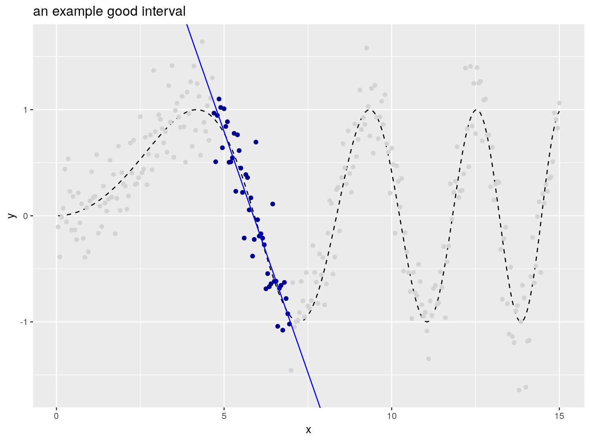
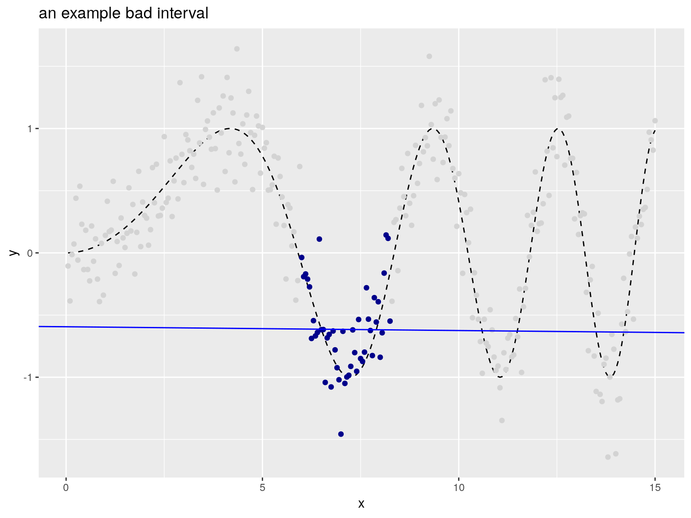

The package
RcppDynProg is an Rcpp based R package that implements simple, but powerful, table-based dynamic programming. This package can be used to optimally solve the minimum cost partition into intervals problem (described below) and is useful in building piecewise estimates of functions (shown in this note).
The abstract problem
The primary problem RcppDynProg::solve_interval_partition() is designed to solve is formally given as follows.
Minimum cost partition into intervals.
Given: a positive integer
nand an a (n) bynmatrix calledcosts.Find: an increasing sequence of integers
solnwithlength(soln)==k (>=2),soln[1] == 1, andsoln[k] == n+1such thatsum[i=1,...,k-1] costs[soln[i], soln[i+1]-1]is minimized.
To rephrase: costs[i,j] is specifying the cost of taking the interval of integers {i,...,j} (inclusive) as a single element of our solution. The problem is to find the minimum cost partition of the set of integers {1,...,n} as a sequence of intervals. A user supplies a matrix of costs of every possible interval of integers, and the solver then finds what disjoint set of intervals that cover {1,...,n} have the lowest sum of costs. The user encodes their optimization problem a family of interval costs (n(n-1)/2 of them, which is a lot- but is tractable) and the algorithm quickly finds the best simultaneous set of intervals (there are 2^(n-1) partitions into intervals, so exhaustive search would not be practical).
We can illustrate this abstract problem as follows (if this is too abstract, please skip forward to the concrete application).
Suppose we have the following cost matrix.
costs <- matrix(c(1.5, NA ,NA ,1 ,0 , NA, 5, -1, 1),
nrow = 3)
print(costs)
# [,1] [,2] [,3]
# [1,] 1.5 1 5
# [2,] NA 0 -1
# [3,] NA NA 1Then the optimal partition is found as follows.
The sequence [1, 2, 4] is a just compact representation for the following sequence of intervals.
lapply(
seq_len(length(soln)-1),
function(i) {
soln[i]:(soln[i+1]-1)
})
# [[1]]
# [1] 1
#
# [[2]]
# [1] 2 3Which is saying the optimal partition into intervals is to the sequence of sets [{1}, {2, 3}] which has total cost costs[1,1] + costs[2,3]. The dynamic programming solver knew to take the expensive set {1} to allow the cheap set {2, 3} to be in its chosen partition. This is the essence of dynamic programming: finding an optimal global solution, even if it requires odd-looking local choices.
An application
The intended application of RcppDynProg is to find optimal piecewise solutions to single-variable modeling problems. For example consider the following data.

In the above we have an input (or independent variable) x and an observed outcome (or dependent variable) y_observed (portrayed as points). y_observed is the unobserved idea value y_ideal (portrayed by the dashed curve) plus independent noise. The modeling goal is to get close the y_ideal curve using the y_observed observations. Obviously this can be done with a smoothing spline, but let’s use RcppDynProg to find a piecewise linear fit.
To encode this as a dynamic programming problem we need to build a cost matrix that for every consecutive interval of x-values we have estimated the out-of sample quality of fit. This is supplied by the function RcppDynProg::lin_costs() (using the PRESS statistic), but lets take a quick look at the idea.
The following interval is a good interval, as all the chosen points (shown in dark blue) are in a nearly linear arrangement. The in-sample price of the interval would be the total sum of residuals of a linear model fit on the selected region (and the out of sample price would be given by the PRESS statistic).

The “cost” (or loss) of this interval can be estimated as shown.
print(good_interval_indexes) # interval
# [1] 94 139
print(1 + good_interval_indexes[2] - good_interval_indexes[1]) # width
# [1] 46
fit <- lm(y_observed ~ x,
data = d[good_interval_indexes[1]:good_interval_indexes[2], ])
sum(fit$residuals^2) # cost for interval
# [1] 2.807998The following interval is a bad interval, as all the chosen points (shown in dark blue) are not in a nearly linear arrangement.

print(bad_interval_indexes) # interval
# [1] 116 161
print(1 + bad_interval_indexes[2] - bad_interval_indexes[1]) # width
# [1] 46
fit <- lm(y_observed ~ x,
data = d[bad_interval_indexes[1]:bad_interval_indexes[2], ])
sum(fit$residuals^2) # cost for interval
# [1] 5.242647The user would price all of the intervals individually, and then ask the solver to find the best simultaneous set of intervals.
The complete solution is worked as follows (using the RcppDynProg::solve_for_partition() function which wraps all the steps together, converting from indices to x-coordinates).
x_cuts <- solve_for_partition(d$x, d$y_observed, penalty = 1)
print(x_cuts)
# x pred group what
# 1 0.05 -0.1570880 1 left
# 2 4.65 1.1593754 1 right
# 3 4.70 1.0653666 2 left
# 4 6.95 -0.9770792 2 right
# 5 7.00 -1.2254925 3 left
# 6 9.20 0.8971391 3 right
# 7 9.25 1.3792437 4 left
# 8 11.10 -1.1542021 4 right
# 9 11.15 -1.0418353 5 left
# 10 12.50 1.1519490 5 right
# 11 12.55 1.3964906 6 left
# 12 13.75 -1.2045219 6 right
# 13 13.80 -1.3791405 7 left
# 14 15.00 1.0195679 7 right
d$estimate <- approx(x_cuts$x, x_cuts$pred,
xout = d$x,
method = "linear", rule = 2)$y
d$group <- as.character(
findInterval(d$x, x_cuts[x_cuts$what=="left", "x"]))
plt2 <- ggplot(data= d, aes(x = x)) +
geom_line(aes(y = y_ideal), linetype=2) +
geom_point(aes(y = y_observed, color = group)) +
geom_line(aes(y = estimate, color = group)) +
ylab("y") +
ggtitle("RcppDynProg piecewise linear estimate",
subtitle = "dots: observed values, segments: observed group means, dashed line: unobserved true values") +
theme(legend.position = "none") +
scale_color_brewer(palette = "Dark2")
print(plt2)
RcppDynProg::solve_for_partition() finds a partition of a relation into a number of linear estimates. Each interval is priced using out-of sample cost via the PRESS statistic plus the specified penalty (to discourage small intervals). Notice, however, the user did not have to specify a k (or number of intervals) to a get good result.
The entire modeling procedure is wrapped as a vtreat custom-coder in the function RcppDynProg::piecewise_linear(). This allows such variable treatments to be easily incorporated into modeling pipelines (example here).
In addition to a piecewise linear solver we include a piecewise constant solver, which is demonstrated here. Other applications can include peak detection, or any other application where the per-segment metrics are independent.
The methodology
The solver is fast through to the use of 3 techniques:
-
RcppDynProg::solve_for_partition()includes a problem reduction heuristic in the spirit of the parameterized complexity methodology. - Ordered (or interval) partition problems are amenable to dynamic programming because initial segments of an interval partition have succinct summaries (just the right-most index and how many segments were used to get to this point).
-
RcppDynProgis a fastC++implementation usingRcpp.
Some basic timings show the C++ implementation can be over 200 times faster than a direct transliteration R of the same code (so not vectorized, not fully R idiomatic, some time lost to seqi() abstraction), and over 400 times faster than a Python direct transliteration of the same code (so not optimized, and not “Pythonic”). The non-optimized and non-adapted nature of the code translations unfortunately exaggerates the speedup, however the Rcpp is likely buying as a solid factor of over 100- as C++ is going to be much more efficient at all of the index-chasing this dynamic programming solution is based on.
A note on problem complexity: general partition problems (where we do not restrict the subsets to be intervals) are NP-hard, so not thought to be amenable to efficient general solutions at scale (subset sum problems being good examples).
RcppDynProg can be installed from CRAN with:
Some other relevant segmentation and dynamic programming methods include:
- Piecewise or segmented regression in general.
-
GAM,mgcv, quantile segmentation,splinemethods. - The
segmentedpackage break-point/change-point regression package (worked example here). - (l_1) Trend Filtering, which we discuss here.
- The
dynprogpackage, which is a general DSL based memoizer.